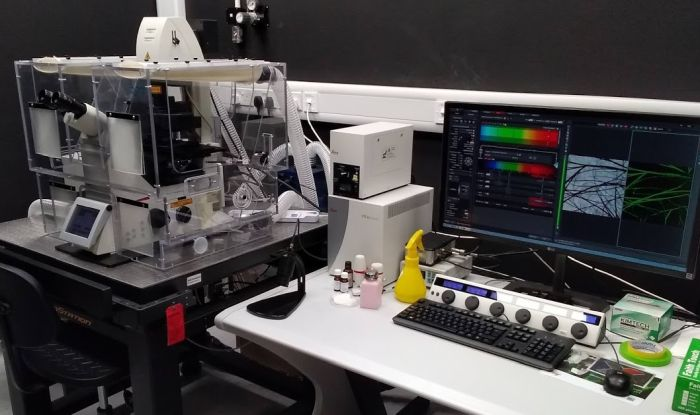

This laser scanning confocal
microscope features a white light laser as well as several conventional
monochromatic lasers, spectral detection by sensitive photon-counting
hybrid detectors and a resonant scanner for very fast confocal imaging.
The motorised stage allows multi-position time-lapse imaging or tile
scans of large samples. A heated stage top chamber is available upon
request. N2 cylinder can be provided on request.

Available
techniques:
- Laser scanning microscopy (LSM) confocal imaging
- Spectral imaging (excitation and emission fluorescence spectra)
- Fluorescence recovery after photobleaching (FRAP)
Objectives:
- PL Fluotar 20x/0.4 dry, FWD 6.9 mm, CG 0-2 mm (DIC)
- Plan Apo 40x/0.85 dry, FWD 0.21 mm, CG 0.11-0.23 mm (DIC)
- Plan Apo 40x/1.1 water, FWD 0.65 mm, CG 0.14-0.18 mm (DIC)
- Plan Apo 63x/1.4 oil, FWD 0.14 mm, CG 0.17 mm (DIC)
- Plan Apo 100x/1.4 oil, FWD 0.13 mm, CG 0.17 mm (DIC)
[FWD = free working distance, CG = cover glass]
Fluorescence
excitation sources:
Confocal laser lines (power at the sample):
- White light laser (470 nm – 670 nm)
- 405 nm, 442 nm, 458 nm, 476 nm, 488 nm, 496 nm, 514 nm, 561 nm
Epifluorescence:
- Leica mercury metal halide lamp
Filter sets and
dichroics:
Tunable acousto-optical beam-splitter (AOBS) for confocal scanning
Detectors and
cameras:
- 3 hybrid photon-counting detectors (HyD)
- 1 PMT
- Transmitted light PMT
Software:
Other features:
- Resonant scanner (8 kHz)
- Galvo-stage for fast Z-scanning (allows scanning in XZ-plane)
- Motorised stage
- Hardware autofocus
- Stage-top incubator (on request)
- Water immersion micro dispenser (on request)
- N2 detector in the room
| Usage fees [SGD/hour] |
Academia |
Industry |
| 30 |
60 |
| Location |
ABIF, SCELSE, B2 (SBS-B2n-27P.4) |
| Safety Notice |
Requires N3 laser license
(N2/04107/0169) |
| Contact |
abif@e.ntu.edu.sg |
BACK TO TOP